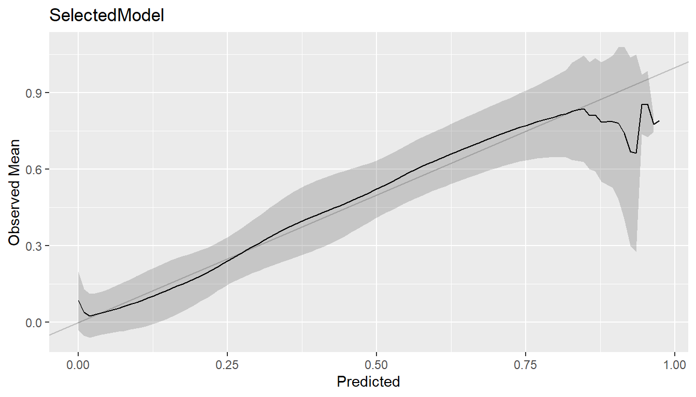
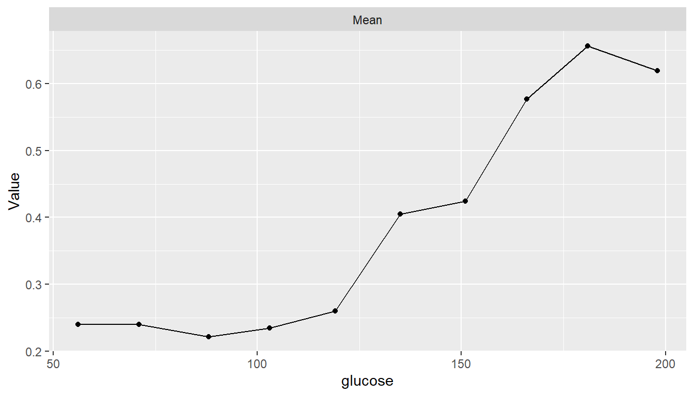
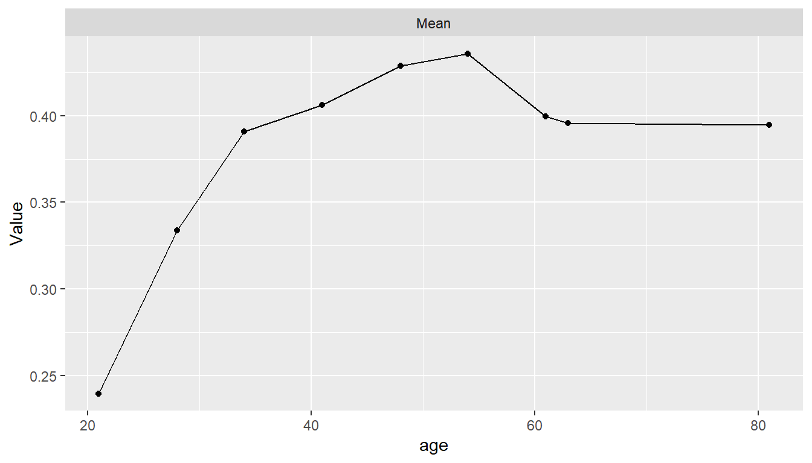
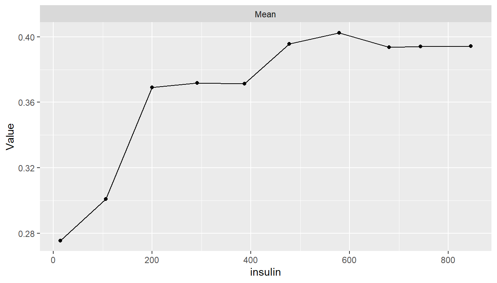

Example
Diabetes in Pima Indian Women
Characteristics of Pima Indian women tested for diabetes are used in this example to predict their disease statuses.
| Characteristic | Value |
|---|---|
| Number of women | 392 |
| diabetes | |
| pos | 130 (33.16%) |
| neg | 262 (66.84%) |
| pregnant | |
| Median (Range) | 2 (0, 17) |
| glucose | |
| Median (Range) | 119 (56, 198) |
| pressure | |
| Median (Range) | 70 (24, 110) |
| triceps | |
| Median (Range) | 29 (7, 63) |
| insulin | |
| Median (Range) | 125.5 (14, 846) |
| mass | |
| Median (Range) | 33.2 (18.2, 67.1) |
| pedigree | |
| Median (Range) | 0.4495 (0.085, 2.420) |
| age | |
| Median (Range) | 27 (21, 81) |
Training Set Analysis
## Analysis libraries
library(MachineShop)
library(mlbench)
library(ggplot2)
## Parallel processing
library(doParallel)
registerDoParallel(cores = 6)
## Dataset
data(PimaIndiansDiabetes2)
Pima <- na.omit(PimaIndiansDiabetes2)
## Model formula
fo <- diabetes ~ .
## Model selected from tuned models
selected_model <- SelectedModel(TunedModel(KNNModel, grid = 5),
TunedModel(NNetModel, grid = 5),
TunedModel(RandomForestModel, grid = 5))
## Model fit
model_fit <- fit(fo, data = Pima, model = selected_model)
## Variable importance
vi <- varimp(model_fit)
plot(vi)
Generalization Performance
## Resample estimation with cross-validation
res <- resample(fo, data = Pima, model = selected_model, control = CVControl)
## Estimated performance
summary(performance(res))
#> Statistic
#> Metric Mean Median SD Min Max NA
#> Brier 0.1482828 0.1560074 0.03314626 0.1068941 0.2044351 0
#> Accuracy 0.7884615 0.8076923 0.07470753 0.6410256 0.8717949 0
#> Kappa 0.5067195 0.5457143 0.17608439 0.1250000 0.7058824 0
#> ROC AUC 0.8434692 0.8125685 0.07164409 0.7278107 0.9349112 0
#> Sensitivity 0.6153846 0.6153846 0.12026707 0.3076923 0.7692308 0
#> Specificity 0.8745014 0.9038462 0.06874259 0.7692308 0.9615385 0
## Variable probability cutoff
summary(performance(res, cutoff = 0.25))
#> Statistic
#> Metric Mean Median SD Min Max NA
#> Brier 0.1482828 0.1560074 0.03314626 0.1068941 0.2044351 0
#> Accuracy 0.7451923 0.7564103 0.04425425 0.6500000 0.7948718 0
#> Kappa 0.4894742 0.5131579 0.08904423 0.3563218 0.6000000 0
#> ROC AUC 0.8434692 0.8125685 0.07164409 0.7278107 0.9349112 0
#> Sensitivity 0.8692308 0.9230769 0.12587628 0.6153846 1.0000000 0
#> Specificity 0.6839031 0.6923077 0.06708933 0.5185185 0.7692308 0ROC Curve
## True positive and false positive rates over all probability cutoffs
roc <- performance_curve(res)
## ROC curve
plot(roc, diagonal = TRUE) + coord_fixed()
## Area under the curve
auc(roc)
#> Model: SelectedModel
#> [1] 0.8393266Confusion Matrices
(conf <- confusion(res))
#> Object of class "ConfusionList"
#>
#> SelectedModel :
#> Observed
#> Predicted neg pos
#> neg 229 50
#> pos 33 80
summary(conf)
#> SelectedModel :
#> Number of responses: 392
#> Accuracy (SE): 0.7882653 (0.02063427)
#> Majority class: 0.6683673
#> Kappa: 0.5061024
#>
#> neg pos
#> Observed 0.6683673 0.3316327
#> Predicted 0.7117347 0.2882653
#> Agreement 0.5841837 0.2040816
#> Sensitivity 0.8740458 0.6153846
#> Specificity 0.6153846 0.8740458
#> PPV 0.8207885 0.7079646
#> NPV 0.7079646 0.8207885
plot(conf)
#> $SelectedModel
## Variable probability cutoff
summary(confusion(res, cutoff = 0.25))
#> SelectedModel :
#> Number of responses: 392
#> Accuracy (SE): 0.744898 (0.02201721)
#> Majority class: 0.6683673
#> Kappa: 0.4897959
#>
#> neg pos
#> Observed 0.6683673 0.3316327
#> Predicted 0.5000000 0.5000000
#> Agreement 0.4566327 0.2882653
#> Sensitivity 0.6832061 0.8692308
#> Specificity 0.8692308 0.6832061
#> PPV 0.9132653 0.5765306
#> NPV 0.5765306 0.9132653Calibration Curve
cal <- calibration(res, breaks = NULL)
plot(cal, se = TRUE)
Partial Dependence Plots
pd <- dependence(model_fit, select = c(glucose, age, insulin))
plot(pd)